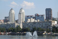

Cultura e Informações
Dnipro é um dos principais centros industriais, científicos e espaciais da Ucrânia. Situada nas margens do majestoso rio Dniepre, a cidade destaca-se pela sua marginal ribeirinha com mais de 20 km de extensão — uma das mais longas da Europa —, combinando grandes avenidas modernas com um património cultural vibrante.
Entre os seus locais de maior destaque encontram-se o Centro Menorah (um dos maiores centros culturais judaicos do mundo), a arborizada Ilha Monastyrsky e os seus diversos museus de história e ciência aeroespacial.
